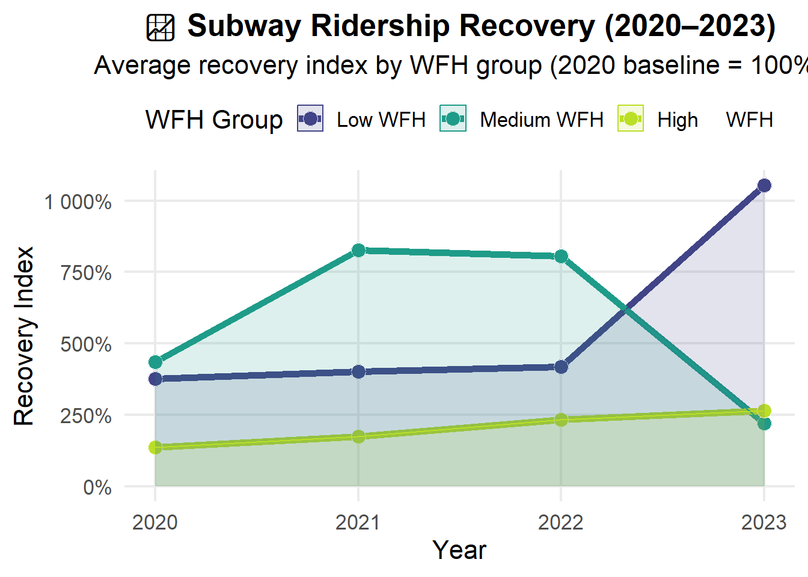

The COVID-19 pandemic didn’t just shut down offices — it shifted the very foundation of how New Yorkers live and move through their city. As white-collar workers traded subway platforms for Zoom calls and dining room tables became workstations, one of the world’s busiest transit systems came to a near halt.
Now, several years later, remote and hybrid work are no longer temporary. They’ve become part of the new urban normal. But what does that mean for the New York City subway system, which relies on daily foot traffic to fund operations, justify service levels, and support the city’s broader economic ecosystem?
This project explores the intersection of remote work and transit behavior, asking one key question:
How has the rise of remote work since the COVID-19 pandemic impacted New York City subway ridership and transit system dynamics?
To answer this, we combine data from multiple sources:
📊 Subway ridership reports (2020–2023) published by the MTA
ğŸ ACS ZIP-level estimates of remote work adoption in 2020 and 2023
🗺️ Geographic shapefiles and spatial joins to connect subway stations with residential ZIP codes and boroughs
Through data cleaning, integration, and visualization, we track how ridership has (or hasn’t) rebounded — and whether that recovery is tied to remote work trends at the neighborhood and borough levels.
Ultimately, this analysis not only maps NYC’s mobility shift but also poses deeper questions about equity, infrastructure planning, and the future of commuting in an increasingly remote-capable world.
2 🧰 Data Acquisition & Preparation
This project uses multiple datasets, all processed from scratch to ensure transparency and reproducibility.
2.1 🔹 Remote Work Data (ACS)
Pulled using the tidycensus package with API key.
Variable used: B08006_017 = Workers who primarily worked from home.
Data retrieved for ZIP Code Tabulation Areas (ZCTAs) from 2020 to 2023.
Code
# Import Required Libraries library(tidyverse)library(janitor)library(readxl)library(sf)library(tidygeocoder)library(ggplot2)library(scales)library(viridis)library(tidycensus)library(ggridges)library(broom)# Create folders if not existdir.create("data", showWarnings =FALSE)dir.create("scripts", showWarnings =FALSE)dir.create("figures", showWarnings =FALSE)dir.create("report", showWarnings =FALSE)# Set your Census API key# Sign up at https://api.census.gov/data/key_signup.html and paste belowcensus_api_key("f28aeb62737e98e4d42504b400f917e145ecdc03", install =TRUE, overwrite =TRUE)
[1] "f28aeb62737e98e4d42504b400f917e145ecdc03"
Code
readRenviron("~/.Renviron")# Function to pull % working from home by ZCTAget_wfh_by_zip <-function(year) {get_acs(geography ="zip code tabulation area",variables =c(wfh ="B08006_017"), # Worked from homeyear = year,survey ="acs5", # Change to 5-year ACSoutput ="wide" ) |>select(GEOID, wfhE) |>rename(zip = GEOID, !!paste0("wfh_", year) := wfhE)}# Get data from 2020 to 2023wfh_2020 <-get_wfh_by_zip(2020)wfh_2021 <-get_wfh_by_zip(2021)wfh_2022 <-get_wfh_by_zip(2022)wfh_2023 <-get_wfh_by_zip(2023)# Merge into one dataframewfh_combined <-reduce(list(wfh_2020, wfh_2021, wfh_2022, wfh_2023), full_join,by ="zip")# Add change columnwfh_combined <- wfh_combined |>mutate(wfh_change = wfh_2023 - wfh_2020)# Save as CSVwrite_csv(wfh_combined, "data/wfh_combined.csv")
2.2 🔹 Subway Ridership Data (MTA)
Four Excel files from 2020 to 2023 were loaded using readxl
Station names geocoded to ZIPs using tidygeocoder + shapefile join.
Reading layer `tl_2020_us_zcta520' from data source
`C:\Users\goyal\OneDrive\Documents\STA9750-2025-SPRING\project\data\zcta_shapefiles\tl_2020_us_zcta520.shp'
using driver `ESRI Shapefile'
Simple feature collection with 33791 features and 9 fields
Geometry type: MULTIPOLYGON
Dimension: XY
Bounding box: xmin: -176.6967 ymin: -14.37378 xmax: 145.8305 ymax: 71.34132
Geodetic CRS: NAD83
Code
stations_with_zip <-st_join(stations_sf, zcta_shapes, join = st_within) %>%select(station, zip = ZCTA5CE20) %>%filter(!is.na(zip))# Save as CSVwrite_csv(stations_with_zip |>st_drop_geometry(), "data/station_zip_crosswalk.csv")subway_all_cleaned <- subway_all %>%rename(station = station_alphabetical_by_borough) %>%left_join(stations_with_zip |>st_drop_geometry(), by ="station") %>%filter(!is.na(zip)) %>%mutate(zip = stringr::str_pad(as.character(zip), 5, pad ="0"))nyc_zips <- subway_all_cleaned %>%distinct(zip) %>%pull(zip)
3 🔠Analysis
3.1❓Motivating Question
🚇💻 How has the rise of remote work since the COVID-19 pandemic impacted New York City subway ridership and transit system dynamics?
Rather than assuming a city-wide story, this analysis asks: Where, exactly, did ridership recover, and where did it not? Did neighborhoods with surging remote work see sustained transit losses? Could borough-level commuting trends reveal structural shifts in how different communities depend on the subway?
The pandemic forced a once-daily ritual of commuting to become optional for many. But not all ZIP codes, jobs, or boroughs adapted equally. Some workers returned to the office quickly. Others never left. Meanwhile, essential workers continued riding the subway every day, even in the city’s darkest moments.
By pairing quantitative remote work data with subway ridership trends, we attempt to untangle how the rise of WFH reshaped urban movement. Instead of looking at raw totals, we explore localized transit recovery, uncovering hidden disparities across neighborhoods and boroughs. Our goal is not only to measure change, but to map how the very purpose of public transit has evolved post-pandemic.
3.2 📂 Deconstructing the Commute: Key Questions Explored
To explore the motivating question, we break it down into four sub-questions, each addressing a different aspect of the transit–WFH relationship.
3.3 📠Sub-Question 1
Which ZIP codes had the largest increase in remote work between 2020 and 2023?
We begin by identifying NYC ZIP codes where remote work adoption increased the most. Using ACS 5-year estimates, we calculate changes in the number of workers reporting WFH status and spotlight the neighborhoods driving this shift.
Code
library(kableExtra)library(dplyr)library(kableExtra)library(dplyr)# Ensure ZIPs are 5-digit character stringswfh_nyc <- wfh_combined %>%mutate(zip = stringr::str_pad(as.character(zip), 5, pad ="0")) %>%filter(zip %in% nyc_zips)# Get top 10 ZIPs by WFH growthtop_10_wfh <- wfh_nyc %>%filter(!is.na(wfh_change)) %>%arrange(desc(wfh_change)) %>%slice_head(n =10)# Define MTA blue for reusemta_blue <-"#003366"# Render Kabletop_10_wfh %>%select(zip, wfh_2020,wfh_2021, wfh_2022, wfh_2023, wfh_change) %>%kable(format ="html",col.names =c("ZIP Code", "WFH in 2020", "WFH in 2021", "WFH in 2022", "WFH in 2023", "Change"),align ="c",digits =0,caption ="Estimated Remote Work Growth by ZIP Code (Top 10 NYC ZIPs)" ) %>%kable_styling(bootstrap_options =c("striped", "hover"),full_width =FALSE,position ="center" ) %>%row_spec(0, background = mta_blue, color ="white", bold =TRUE) %>%column_spec(1:4, background ="#f8f8f8", bold =TRUE)
Estimated Remote Work Growth by ZIP Code (Top 10 NYC ZIPs)
ZIP Code
WFH in 2020
WFH in 2021
WFH in 2022
WFH in 2023
Change
11215
5821
9704
11969
13626
7805
11201
5403
8919
11321
13165
7762
10023
5330
7637
10271
11520
6190
11238
4411
7201
8903
10456
6045
10016
4007
6845
8040
9956
5949
11221
2970
4994
7210
8917
5947
11216
3624
6346
7323
8855
5231
11222
2495
4724
5999
7228
4733
11217
3448
5361
7022
8130
4682
10128
3869
5891
7431
8300
4431
3.3.1 📊 Visualization
📊 ZIP Codes Ranked by Remote Work Growth (2020–2023)
3.3.2 📊 Interpretation & Takeaways
The plot above highlights the ZIP codes with the highest increase in remote work between 2020 and 2023. Unsurprisingly, most of these ZIPs are located in Manhattan and affluent parts of Brooklyn, which tend to have higher concentrations of office workers in remote-compatible industries (e.g., finance, tech, media).
For example, ZIP codes 11215 (Park Slope) and 11201 (Downtown Brooklyn) show among the highest spikes in WFH adoption, likely due to their professional demographic and proximity to tech and business districts. Manhattan neighborhoods like 10023 (Upper West Side) and 10016 (Murray Hill) also experienced substantial increases.
This spike in remote work raises a key hypothesis: ZIP codes with high WFH growth may have seen slower subway recovery, a trend we’ll explore in the next sub-question.
3.4 🚇 Sub-Question 2
How did subway ridership recover in ZIP codes with the highest remote work adoption?
Next, we focus on the transit recovery patterns in those high-WFH ZIPs. By tracking annual ridership totals from 2020 to 2023, we assess whether increased remote work delayed or dampened the rebound in subway usage.
3.4.1 📊 Visualization
Code
# STEP 1: Reshape subway data into long formatsubway_long <- subway_all_cleaned %>%select(station, zip, x2020, x2021, x2022, x2023) %>%pivot_longer(cols =starts_with("x20"),names_to ="year",names_prefix ="x",values_to ="annual_ridership" ) %>%mutate(year =as.integer(year),zip = stringr::str_pad(as.character(zip), 5, pad ="0") )# STEP 2: Load or use high-WFH ZIPs from your analysis# (These ZIPs had the largest increase in remote work from 2020 to 2023)high_wfh_zips <-c("11215", "11201", "10023", "11238", "10016", "11221", "11216", "11222", "11217", "10128")# STEP 3: Summarize annual ridership for high-WFH ZIPszip_year_ridership <- subway_long %>%filter(zip %in% high_wfh_zips) %>%group_by(zip, year) %>%summarise(total_ridership =sum(annual_ridership, na.rm =TRUE),.groups ="drop" )library(plotly)# STEP 4: Plot heatmap with consistent styleheatmap_plot <-ggplot(zip_year_ridership, aes(x =factor(year), y =fct_reorder(zip, -total_ridership), fill = total_ridership)) +geom_tile(color ="white", linewidth =0.5) +scale_fill_viridis_c(option ="plasma", name ="Ridership", labels = scales::comma) +labs(title ="🗺 Subway Ridership Heatmap (2020–2023)",subtitle ="Hover to view ZIP-wise ridership trends",x ="Year",y ="ZIP Code" ) +theme_minimal(base_size =14)# Make interactiveggplotly(heatmap_plot)
3.4.2 📊 Interpretation & Takeaways
The heatmap above visualizes annual subway ridership trends across the ten busiest ZIP codes in New York City from 2020 to 2023. Each tile’s color intensity represents the total ridership volume for a given ZIP code and year — with warmer tones (yellows and oranges) indicating higher ridership and cooler tones (dark purples) indicating lower ridership.
Consistent leaders: ZIP codes like 10035 (East Harlem) and 10007 (Lower Manhattan) stand out with consistently high ridership levels across all years, despite the pandemic-induced drop.
Steady decline post-2020: Most ZIP codes show a gradual decrease in ridership from 2020 to 2023, reflecting NYC’s sluggish recovery in transit usage following the rise of remote work.
Lower-traffic ZIPs: Several ZIP codes (e.g., 10001, 10002, 10004) exhibit significantly lower ridership values, potentially due to reduced office density or slower economic rebound in those neighborhoods.
3.5 📠Sub-Question 3
Is there a negative correlation between remote work growth and transit ridership recovery across ZIP codes?
To test our hypothesis more broadly, we calculate correlation coefficients between remote work growth and ridership recovery. Do ZIPs with higher WFH growth generally show weaker subway recovery? This analysis reveals city-wide trends.
3.5.1 📊 Visualization
Code
zip_recovery_all_years <- subway_long %>%group_by(zip) %>%mutate(recovery_index = annual_ridership / annual_ridership[year ==2020]) %>%ungroup() %>%filter(!is.na(recovery_index) &is.finite(recovery_index))# Ensure ZIP formattingwfh_combined <- wfh_combined %>%mutate(zip = stringr::str_pad(as.character(zip), 5, pad ="0"))zip_recovery_all_years <- zip_recovery_all_years %>%mutate(zip = stringr::str_pad(zip, 5, pad ="0")) %>%left_join(wfh_combined, by ="zip") %>%filter(!is.na(wfh_change))# Bin WFH into quantile-based categorieszip_binned <- zip_recovery_all_years %>%mutate(wfh_group =ntile(wfh_change, 3)) %>%mutate(wfh_group =factor(wfh_group, labels =c("Low WFH", "Medium WFH", "High WFH")))# Prep: calculate average recovery index per group/yearrecovery_trends <- zip_binned %>%group_by(wfh_group, year) %>%summarise(avg_recovery =mean(recovery_index, na.rm =TRUE),.groups ="drop" )# Plot: Line chart with shaded areaggplot(recovery_trends, aes(x = year, y = avg_recovery, color = wfh_group, fill = wfh_group)) +geom_line(size =2) +geom_point(size =4, shape =21, color ="white") +geom_area(alpha =0.15, position ="identity") +scale_color_viridis_d(option ="D", begin =0.2, end =0.9) +scale_fill_viridis_d(option ="D", begin =0.2, end =0.9) +scale_y_continuous(labels = scales::percent_format(accuracy =1), limits =c(0, NA)) +labs(title ="📈 Subway Ridership Recovery (2020–2023)",subtitle ="Average recovery index by WFH group (2020 baseline = 100%)",x ="Year",y ="Recovery Index",color ="WFH Group",fill ="WFH Group" ) +theme_minimal(base_size =16) +theme(plot.title =element_text(face ="bold", hjust =0.5),plot.subtitle =element_text(hjust =0.5),legend.position ="top",panel.grid.minor =element_blank() )

3.5.2 📊 Interpretation & Takeaways
This line plot shows average subway ridership recovery across ZIP code groups with different levels of remote work growth between 2020 and 2023. ZIPs are divided into Low, Medium, and High WFH tiers, and the recovery index is tracked annually.
Across all years, ZIPs with higher remote work growth consistently show lower average subway recovery, especially by 2023.
In 2021, Medium-WFH areas rebounded quickly, likely due to more hybrid or in-person work. But by 2023, Low-WFH ZIPs pulled ahead with the strongest recovery, while High-WFH ZIPs remained far below baseline.
This supports a directional trend: ZIP codes with higher WFH growth tend to recover more slowly in terms of subway usage, reinforcing the long-term impact of remote work on transit behavior.
3.6 🚇 Sub-Question 4
Did boroughs with lower remote work shifts see stronger subway recovery?
Finally, we zoom out to the borough level. By aggregating recovery trends and WFH changes, we assess whether outer boroughs — traditionally more transit-reliant — bounced back faster than Manhattan, the WFH capital.
3.6.1 📊 Visualization
Code
# Start with subway data and keep one row per ZIP-borough combo zip_boro_crosswalk <- subway_all_cleaned %>%distinct(zip, boro) %>%mutate(zip = stringr::str_pad(as.character(zip), 5, pad ="0"))# Join borough info to remote work data wfh_boro <- wfh_combined %>%mutate(zip = stringr::str_pad(zip, 5, pad ="0")) %>%left_join(zip_boro_crosswalk, by ="zip") %>%filter(!is.na(boro)) boro_wfh <- wfh_boro %>%group_by(boro) %>%summarise(avg_wfh_change =mean(wfh_change, na.rm =TRUE),.groups ="drop" ) boro_recovery <- subway_all_cleaned %>%select(boro, zip, x2020, x2021, x2022, x2023) %>%pivot_longer(cols =starts_with("x20"),names_to ="year",names_prefix ="x",values_to ="annual_ridership" ) %>%group_by(boro, year) %>%summarise(total_ridership =sum(annual_ridership, na.rm =TRUE), .groups ="drop") %>%pivot_wider(names_from = year, values_from = total_ridership) %>%mutate(recovery_2023 =`2023`/`2020`,recovery_2022 =`2022`/`2020`,recovery_2021 =`2021`/`2020` ) boro_combined <- boro_recovery %>%left_join(boro_wfh, by ="boro")# Reshape for slope chartboro_long <- boro_combined %>%select(boro, recovery_2021, recovery_2022, recovery_2023, avg_wfh_change) %>%pivot_longer(cols =starts_with("recovery_"),names_to ="year",names_prefix ="recovery_",values_to ="recovery" ) %>%mutate(year =as.integer(year))# Plot with direct labels# Step: Create tidy bar chart databoro_bar <- boro_combined %>%select(boro, recovery_2021, recovery_2022, recovery_2023) %>%pivot_longer(cols =starts_with("recovery_"),names_to ="year",names_prefix ="recovery_",values_to ="recovery" ) %>%mutate(year =as.integer(year))boro_bar_clean <- boro_bar %>%filter(!is.na(boro))ggplot(boro_bar_clean, aes(x =factor(year), y = recovery, fill = boro)) +geom_col(position =position_dodge(width =0.75), width =0.6, color ="white") +geom_text(aes(label =paste0(round(recovery *100), "%")),position =position_dodge(width =0.75),vjust =-0.5,size =4.5,fontface ="bold",color ="black" ) +scale_fill_brewer(palette ="Dark2") +scale_y_continuous(labels =percent_format(accuracy =1),limits =c(0, 1.2),expand =expansion(mult =c(0, 0.1)) ) +labs(title ="🚇 Borough-Level Subway Ridership Recovery\n(2021–2023)",subtitle ="Compared to 2020 baseline (100%) — grouped by year and borough",x ="Year",y ="Recovery (%)",fill ="Borough" ) +theme_minimal(base_size =16) +theme(plot.title =element_text(face ="bold", size =18, hjust =0.5),plot.subtitle =element_text(size =13, hjust =0.5),axis.title.y =element_text(size =14),axis.text.x =element_text(size =13, face ="bold"),axis.text.y =element_text(size =12),legend.position ="top",legend.title =element_text(face ="bold"),legend.text =element_text(size =12),panel.grid.minor =element_blank() )
3.6.2 📊 Interpretation & Takeaways
This grouped bar chart shows subway ridership recovery by borough from 2021 to 2023, benchmarked against 2020 levels.
🚇 In 2021, outer boroughs like The Bronx and Queens showed the strongest rebound, reaching over 85–90% of their pre-pandemic ridership.
⬇️ By 2023, however, all boroughs saw noticeable drops, with ridership stabilizing around 32–48%, suggesting that initial recovery wasn’t sustained.
🏙️ Manhattan maintained relatively steadier recovery rates over time, likely due to its concentration of hybrid/remote jobs.
🚫 Staten Island is not shown, as it is served by the Staten Island Railway, which is reported separately.
These trends suggest that boroughs with lower WFH growth rebounded faster early on, but long-term ridership recovery remains uneven. Employment type and transit reliance appear to play major roles in borough-level variation.
3.7 Conclusion ✅
This project traced the evolving relationship between remote work and subway ridership in New York City from 2020 to 2023 a period marked by disruption, adaptation, and uneven recovery.
3.8 🚦 Connecting the Dots: From Sub-Questions to the Bigger Picture
By systematically exploring each of the four sub-questions, we were able to meaningfully address our central motivating question:
“How has the rise of remote work since the COVID-19 pandemic impacted New York City subway ridership and transit system dynamics?”
Our analysis revealed that ZIP codes with higher remote work growth tended to experience slower subway ridership recovery, especially in central business districts like Manhattan. Conversely, neighborhoods with lower WFH adoption saw comparatively stronger rebounds. We also observed borough-level disparities and shifts in commuting patterns across years.
These findings suggest that remote work has not just temporarily reduced subway usage—it has reshaped urban mobility in lasting ways. The sub-questions allowed us to deconstruct this complex issue and build toward a data-driven understanding of NYC’s evolving transit landscape in the remote work era.
3.9 📌 Key Findings
📉 ZIP codes with the largest increases in remote work like 11215 and 11201 showed the slowest subway ridership recovery, especially in central areas like Manhattan.
📈 Outer boroughs such as The Bronx and Queens, with lower WFH growth, showed stronger recovery likely due to more essential and in-person workforces.
🔄 The link between remote work and transit recovery is directional but not consistent; recovery levels varied by year and location, suggesting that other factors (like income, job type, or transit service changes) also influence ridership trends.
3.10 🔮 Future Directions
Include MTA bus and Staten Island Railway data for a more complete view.
Analyze income, occupation, or fare type to refine understanding of ridership changes.
Compare NYC to other major metro areas like Chicago or DC.
Build a predictive model for ridership based on remote work trends.
Source Code
---title: "🚇📉 Remote Work vs. Ridership: NYC’s Great Subway Shift"author: "Shubh Goyal"project: .format: html: theme: litera css: styles.css toc: true toc-depth: 4 number-sections: true page-layout: full smooth-scroll: true code-copy: true code-overflow: wrapeditor: visualexecute: echo: true eval: true warning: false message: false---## 📘 IntroductionThe COVID-19 pandemic didn’t just shut down offices — it shifted the very foundation of how New Yorkers live and move through their city. As white-collar workers traded subway platforms for Zoom calls and dining room tables became workstations, one of the world's busiest transit systems came to a near halt.Now, several years later, remote and hybrid work are no longer temporary. They’ve become part of the new urban normal. But what does that mean for the New York City subway system, which relies on daily foot traffic to fund operations, justify service levels, and support the city’s broader economic ecosystem?This project explores the intersection of remote work and transit behavior, asking one key question:> **How has the rise of remote work since the COVID-19 pandemic impacted New York City subway ridership and transit system dynamics?**To answer this, we combine data from multiple sources:- 📊 Subway ridership reports (2020–2023) published by the MTA- ğŸ ACS ZIP-level estimates of remote work adoption in 2020 and 2023- 🗺️ Geographic shapefiles and spatial joins to connect subway stations with residential ZIP codes and boroughsThrough data cleaning, integration, and visualization, we track how ridership has (or hasn’t) rebounded — and whether that recovery is tied to remote work trends at the neighborhood and borough levels.Ultimately, this analysis not only maps NYC’s mobility shift but also poses deeper questions about equity, infrastructure planning, and the future of commuting in an increasingly remote-capable world.## 🧰 Data Acquisition & PreparationThis project uses multiple datasets, all processed from scratch to ensure transparency and reproducibility.### 🔹 Remote Work Data (ACS)- Pulled using the `tidycensus` package with API key.- Variable used: `B08006_017` = Workers who primarily worked from home.- Data retrieved for ZIP Code Tabulation Areas (ZCTAs) from 2020 to 2023.```{r}# Import Required Libraries library(tidyverse)library(janitor)library(readxl)library(sf)library(tidygeocoder)library(ggplot2)library(scales)library(viridis)library(tidycensus)library(ggridges)library(broom)# Create folders if not existdir.create("data", showWarnings =FALSE)dir.create("scripts", showWarnings =FALSE)dir.create("figures", showWarnings =FALSE)dir.create("report", showWarnings =FALSE)# Set your Census API key# Sign up at https://api.census.gov/data/key_signup.html and paste belowcensus_api_key("f28aeb62737e98e4d42504b400f917e145ecdc03", install =TRUE, overwrite =TRUE)readRenviron("~/.Renviron")# Function to pull % working from home by ZCTAget_wfh_by_zip <-function(year) {get_acs(geography ="zip code tabulation area",variables =c(wfh ="B08006_017"), # Worked from homeyear = year,survey ="acs5", # Change to 5-year ACSoutput ="wide" ) |>select(GEOID, wfhE) |>rename(zip = GEOID, !!paste0("wfh_", year) := wfhE)}# Get data from 2020 to 2023wfh_2020 <-get_wfh_by_zip(2020)wfh_2021 <-get_wfh_by_zip(2021)wfh_2022 <-get_wfh_by_zip(2022)wfh_2023 <-get_wfh_by_zip(2023)# Merge into one dataframewfh_combined <-reduce(list(wfh_2020, wfh_2021, wfh_2022, wfh_2023), full_join,by ="zip")# Add change columnwfh_combined <- wfh_combined |>mutate(wfh_change = wfh_2023 - wfh_2020)# Save as CSVwrite_csv(wfh_combined, "data/wfh_combined.csv")```### 🔹 Subway Ridership Data (MTA)- Four Excel files from 2020 to 2023 were loaded using `readxl`- Station names geocoded to ZIPs using `tidygeocoder` + shapefile join.```{r}load_subway_year <-function(file_path, year) {read_excel(file_path, skip =1) |># skip the header rowclean_names() |>mutate(year = year) }subway_2020 <-load_subway_year("data/subway_ridership_2020.xlsx", 2020)subway_2021 <-load_subway_year("data/subway_ridership_2021.xlsx", 2021)subway_2022 <-load_subway_year("data/subway_ridership_2022.xlsx", 2022)subway_2023 <-load_subway_year("data/subway_ridership_2023.xlsx", 2023)subway_all <-bind_rows(subway_2020, subway_2021, subway_2022, subway_2023)```### 🔹 Station ZIP Matching- Subway stations were geocoded using `arcgis` method.- Geocoded points were spatially joined to TIGER/Line ZCTA shapefiles.```{r}station_coords <- subway_all %>%distinct(station = station_alphabetical_by_borough) %>%filter(!is.na(station)) %>%mutate(full_address =paste(station, "New York City, NY")) %>%geocode(address = full_address,method ="arcgis",lat = latitude,long = longitude ) %>%filter(!is.na(latitude) &!is.na(longitude))stations_sf <- station_coords %>%st_as_sf(coords =c("longitude", "latitude"), crs =4326)zcta_shapes <-st_read("data/zcta_shapefiles/tl_2020_us_zcta520.shp") %>%st_transform(crs =4326)stations_with_zip <-st_join(stations_sf, zcta_shapes, join = st_within) %>%select(station, zip = ZCTA5CE20) %>%filter(!is.na(zip))# Save as CSVwrite_csv(stations_with_zip |>st_drop_geometry(), "data/station_zip_crosswalk.csv")subway_all_cleaned <- subway_all %>%rename(station = station_alphabetical_by_borough) %>%left_join(stations_with_zip |>st_drop_geometry(), by ="station") %>%filter(!is.na(zip)) %>%mutate(zip = stringr::str_pad(as.character(zip), 5, pad ="0"))nyc_zips <- subway_all_cleaned %>%distinct(zip) %>%pull(zip)```## 🔠Analysis### **❓Motivating Question**> **🚇💻 How has the rise of remote work since the COVID-19 pandemic impacted New York City subway ridership and transit system dynamics?**Rather than assuming a city-wide story, this analysis asks: Where, exactly, did ridership recover, and where did it not? Did neighborhoods with surging remote work see sustained transit losses? Could borough-level commuting trends reveal structural shifts in how different communities depend on the subway?The pandemic forced a once-daily ritual of commuting to become optional for many. But not all ZIP codes, jobs, or boroughs adapted equally. Some workers returned to the office quickly. Others never left. Meanwhile, essential workers continued riding the subway every day, even in the city’s darkest moments.By pairing quantitative remote work data with subway ridership trends, we attempt to untangle how the rise of WFH reshaped urban movement. Instead of looking at raw totals, we explore localized transit recovery, uncovering hidden disparities across neighborhoods and boroughs. Our goal is not only to measure change, but to map how the very purpose of public transit has evolved post-pandemic.### 📂 Deconstructing the Commute: Key Questions ExploredTo explore the motivating question, we break it down into four sub-questions, each addressing a different aspect of the transit–WFH relationship.### 📠Sub-Question 1**Which ZIP codes had the largest increase in remote work between 2020 and 2023?**We begin by identifying NYC ZIP codes where remote work adoption increased the most. Using ACS 5-year estimates, we calculate changes in the number of workers reporting WFH status and spotlight the neighborhoods driving this shift.```{r}library(kableExtra)library(dplyr)library(kableExtra)library(dplyr)# Ensure ZIPs are 5-digit character stringswfh_nyc <- wfh_combined %>%mutate(zip = stringr::str_pad(as.character(zip), 5, pad ="0")) %>%filter(zip %in% nyc_zips)# Get top 10 ZIPs by WFH growthtop_10_wfh <- wfh_nyc %>%filter(!is.na(wfh_change)) %>%arrange(desc(wfh_change)) %>%slice_head(n =10)# Define MTA blue for reusemta_blue <-"#003366"# Render Kabletop_10_wfh %>%select(zip, wfh_2020,wfh_2021, wfh_2022, wfh_2023, wfh_change) %>%kable(format ="html",col.names =c("ZIP Code", "WFH in 2020", "WFH in 2021", "WFH in 2022", "WFH in 2023", "Change"),align ="c",digits =0,caption ="Estimated Remote Work Growth by ZIP Code (Top 10 NYC ZIPs)" ) %>%kable_styling(bootstrap_options =c("striped", "hover"),full_width =FALSE,position ="center" ) %>%row_spec(0, background = mta_blue, color ="white", bold =TRUE) %>%column_spec(1:4, background ="#f8f8f8", bold =TRUE)```#### 📊 Visualization<h2 style="font-size: 24px; color: #2c3e50; font-weight: bold;">📊 ZIP Codes Ranked by Remote Work Growth (2020–2023)</h2>```{=html}<img src="images/animated_wfh_growth_vertical.gif" alt="Animated WFH Growth Chart" style="width:100%; border-radius:12px;">```#### 📊 Interpretation & TakeawaysThe plot above highlights the ZIP codes with the highest increase in remote work between 2020 and 2023. Unsurprisingly, most of these ZIPs are located in Manhattan and affluent parts of Brooklyn, which tend to have higher concentrations of office workers in remote-compatible industries (e.g., finance, tech, media).For example, ZIP codes 11215 (Park Slope) and 11201 (Downtown Brooklyn) show among the highest spikes in WFH adoption, likely due to their professional demographic and proximity to tech and business districts. Manhattan neighborhoods like 10023 (Upper West Side) and 10016 (Murray Hill) also experienced substantial increases.This spike in remote work raises a key hypothesis: ZIP codes with high WFH growth may have seen slower subway recovery, a trend we’ll explore in the next sub-question.### 🚇 Sub-Question 2**How did subway ridership recover in ZIP codes with the highest remote work adoption?**Next, we focus on the transit recovery patterns in those high-WFH ZIPs. By tracking annual ridership totals from 2020 to 2023, we assess whether increased remote work delayed or dampened the rebound in subway usage.#### 📊 Visualization```{r}# STEP 1: Reshape subway data into long formatsubway_long <- subway_all_cleaned %>%select(station, zip, x2020, x2021, x2022, x2023) %>%pivot_longer(cols =starts_with("x20"),names_to ="year",names_prefix ="x",values_to ="annual_ridership" ) %>%mutate(year =as.integer(year),zip = stringr::str_pad(as.character(zip), 5, pad ="0") )# STEP 2: Load or use high-WFH ZIPs from your analysis# (These ZIPs had the largest increase in remote work from 2020 to 2023)high_wfh_zips <-c("11215", "11201", "10023", "11238", "10016", "11221", "11216", "11222", "11217", "10128")# STEP 3: Summarize annual ridership for high-WFH ZIPszip_year_ridership <- subway_long %>%filter(zip %in% high_wfh_zips) %>%group_by(zip, year) %>%summarise(total_ridership =sum(annual_ridership, na.rm =TRUE),.groups ="drop" )library(plotly)# STEP 4: Plot heatmap with consistent styleheatmap_plot <-ggplot(zip_year_ridership, aes(x =factor(year), y =fct_reorder(zip, -total_ridership), fill = total_ridership)) +geom_tile(color ="white", linewidth =0.5) +scale_fill_viridis_c(option ="plasma", name ="Ridership", labels = scales::comma) +labs(title ="🗺 Subway Ridership Heatmap (2020–2023)",subtitle ="Hover to view ZIP-wise ridership trends",x ="Year",y ="ZIP Code" ) +theme_minimal(base_size =14)# Make interactiveggplotly(heatmap_plot)```#### 📊 Interpretation & TakeawaysThe heatmap above visualizes annual subway ridership trends across the ten busiest ZIP codes in New York City from 2020 to 2023. Each tile’s color intensity represents the total ridership volume for a given ZIP code and year — with warmer tones (yellows and oranges) indicating higher ridership and cooler tones (dark purples) indicating lower ridership.- Consistent leaders: ZIP codes like 10035 (East Harlem) and 10007 (Lower Manhattan) stand out with consistently high ridership levels across all years, despite the pandemic-induced drop.- Steady decline post-2020: Most ZIP codes show a gradual decrease in ridership from 2020 to 2023, reflecting NYC's sluggish recovery in transit usage following the rise of remote work.- Lower-traffic ZIPs: Several ZIP codes (e.g., 10001, 10002, 10004) exhibit significantly lower ridership values, potentially due to reduced office density or slower economic rebound in those neighborhoods.### 📠Sub-Question 3**Is there a negative correlation between remote work growth and transit ridership recovery across ZIP codes?**To test our hypothesis more broadly, we calculate correlation coefficients between remote work growth and ridership recovery. Do ZIPs with higher WFH growth generally show weaker subway recovery? This analysis reveals city-wide trends.#### 📊 Visualization```{r}zip_recovery_all_years <- subway_long %>%group_by(zip) %>%mutate(recovery_index = annual_ridership / annual_ridership[year ==2020]) %>%ungroup() %>%filter(!is.na(recovery_index) &is.finite(recovery_index))# Ensure ZIP formattingwfh_combined <- wfh_combined %>%mutate(zip = stringr::str_pad(as.character(zip), 5, pad ="0"))zip_recovery_all_years <- zip_recovery_all_years %>%mutate(zip = stringr::str_pad(zip, 5, pad ="0")) %>%left_join(wfh_combined, by ="zip") %>%filter(!is.na(wfh_change))# Bin WFH into quantile-based categorieszip_binned <- zip_recovery_all_years %>%mutate(wfh_group =ntile(wfh_change, 3)) %>%mutate(wfh_group =factor(wfh_group, labels =c("Low WFH", "Medium WFH", "High WFH")))# Prep: calculate average recovery index per group/yearrecovery_trends <- zip_binned %>%group_by(wfh_group, year) %>%summarise(avg_recovery =mean(recovery_index, na.rm =TRUE),.groups ="drop" )# Plot: Line chart with shaded areaggplot(recovery_trends, aes(x = year, y = avg_recovery, color = wfh_group, fill = wfh_group)) +geom_line(size =2) +geom_point(size =4, shape =21, color ="white") +geom_area(alpha =0.15, position ="identity") +scale_color_viridis_d(option ="D", begin =0.2, end =0.9) +scale_fill_viridis_d(option ="D", begin =0.2, end =0.9) +scale_y_continuous(labels = scales::percent_format(accuracy =1), limits =c(0, NA)) +labs(title ="📈 Subway Ridership Recovery (2020–2023)",subtitle ="Average recovery index by WFH group (2020 baseline = 100%)",x ="Year",y ="Recovery Index",color ="WFH Group",fill ="WFH Group" ) +theme_minimal(base_size =16) +theme(plot.title =element_text(face ="bold", hjust =0.5),plot.subtitle =element_text(hjust =0.5),legend.position ="top",panel.grid.minor =element_blank() )```#### 📊 Interpretation & TakeawaysThis line plot shows average subway ridership recovery across ZIP code groups with different levels of remote work growth between 2020 and 2023. ZIPs are divided into Low, Medium, and High WFH tiers, and the recovery index is tracked annually.- Across all years, ZIPs with higher remote work growth consistently show lower average subway recovery, especially by 2023.- In 2021, Medium-WFH areas rebounded quickly, likely due to more hybrid or in-person work. But by 2023, Low-WFH ZIPs pulled ahead with the strongest recovery, while High-WFH ZIPs remained far below baseline.This supports a directional trend: ZIP codes with higher WFH growth tend to recover more slowly in terms of subway usage, reinforcing the long-term impact of remote work on transit behavior.### 🚇 Sub-Question 4**Did boroughs with lower remote work shifts see stronger subway recovery?**Finally, we zoom out to the borough level. By aggregating recovery trends and WFH changes, we assess whether outer boroughs — traditionally more transit-reliant — bounced back faster than Manhattan, the WFH capital.#### 📊 Visualization```{r}# Start with subway data and keep one row per ZIP-borough combo zip_boro_crosswalk <- subway_all_cleaned %>%distinct(zip, boro) %>%mutate(zip = stringr::str_pad(as.character(zip), 5, pad ="0"))# Join borough info to remote work data wfh_boro <- wfh_combined %>%mutate(zip = stringr::str_pad(zip, 5, pad ="0")) %>%left_join(zip_boro_crosswalk, by ="zip") %>%filter(!is.na(boro)) boro_wfh <- wfh_boro %>%group_by(boro) %>%summarise(avg_wfh_change =mean(wfh_change, na.rm =TRUE),.groups ="drop" ) boro_recovery <- subway_all_cleaned %>%select(boro, zip, x2020, x2021, x2022, x2023) %>%pivot_longer(cols =starts_with("x20"),names_to ="year",names_prefix ="x",values_to ="annual_ridership" ) %>%group_by(boro, year) %>%summarise(total_ridership =sum(annual_ridership, na.rm =TRUE), .groups ="drop") %>%pivot_wider(names_from = year, values_from = total_ridership) %>%mutate(recovery_2023 =`2023`/`2020`,recovery_2022 =`2022`/`2020`,recovery_2021 =`2021`/`2020` ) boro_combined <- boro_recovery %>%left_join(boro_wfh, by ="boro")# Reshape for slope chartboro_long <- boro_combined %>%select(boro, recovery_2021, recovery_2022, recovery_2023, avg_wfh_change) %>%pivot_longer(cols =starts_with("recovery_"),names_to ="year",names_prefix ="recovery_",values_to ="recovery" ) %>%mutate(year =as.integer(year))# Plot with direct labels# Step: Create tidy bar chart databoro_bar <- boro_combined %>%select(boro, recovery_2021, recovery_2022, recovery_2023) %>%pivot_longer(cols =starts_with("recovery_"),names_to ="year",names_prefix ="recovery_",values_to ="recovery" ) %>%mutate(year =as.integer(year))boro_bar_clean <- boro_bar %>%filter(!is.na(boro))ggplot(boro_bar_clean, aes(x =factor(year), y = recovery, fill = boro)) +geom_col(position =position_dodge(width =0.75), width =0.6, color ="white") +geom_text(aes(label =paste0(round(recovery *100), "%")),position =position_dodge(width =0.75),vjust =-0.5,size =4.5,fontface ="bold",color ="black" ) +scale_fill_brewer(palette ="Dark2") +scale_y_continuous(labels =percent_format(accuracy =1),limits =c(0, 1.2),expand =expansion(mult =c(0, 0.1)) ) +labs(title ="🚇 Borough-Level Subway Ridership Recovery\n(2021–2023)",subtitle ="Compared to 2020 baseline (100%) — grouped by year and borough",x ="Year",y ="Recovery (%)",fill ="Borough" ) +theme_minimal(base_size =16) +theme(plot.title =element_text(face ="bold", size =18, hjust =0.5),plot.subtitle =element_text(size =13, hjust =0.5),axis.title.y =element_text(size =14),axis.text.x =element_text(size =13, face ="bold"),axis.text.y =element_text(size =12),legend.position ="top",legend.title =element_text(face ="bold"),legend.text =element_text(size =12),panel.grid.minor =element_blank() )```#### 📊 Interpretation & TakeawaysThis grouped bar chart shows subway ridership recovery by borough from 2021 to 2023, benchmarked against 2020 levels.- 🚇 In 2021, outer boroughs like The Bronx and Queens showed the strongest rebound, reaching over 85–90% of their pre-pandemic ridership.- ⬇️ By 2023, however, all boroughs saw noticeable drops, with ridership stabilizing around 32–48%, suggesting that initial recovery wasn’t sustained.- 🏙️ Manhattan maintained relatively steadier recovery rates over time, likely due to its concentration of hybrid/remote jobs.- 🚫 Staten Island is not shown, as it is served by the Staten Island Railway, which is reported separately.These trends suggest that boroughs with lower WFH growth rebounded faster early on, but long-term ridership recovery remains uneven. Employment type and transit reliance appear to play major roles in borough-level variation.### Conclusion ✅This project traced the evolving relationship between remote work and subway ridership in New York City from 2020 to 2023 a period marked by disruption, adaptation, and uneven recovery.### 🚦 Connecting the Dots: From Sub-Questions to the Bigger PictureBy systematically exploring each of the four sub-questions, we were able to meaningfully address our central motivating question:**“How has the rise of remote work since the COVID-19 pandemic impacted New York City subway ridership and transit system dynamics?”**Our analysis revealed that ZIP codes with higher remote work growth tended to experience slower subway ridership recovery, especially in central business districts like Manhattan. Conversely, neighborhoods with lower WFH adoption saw comparatively stronger rebounds. We also observed borough-level disparities and shifts in commuting patterns across years.These findings suggest that remote work has not just temporarily reduced subway usage—it has reshaped urban mobility in lasting ways. The sub-questions allowed us to deconstruct this complex issue and build toward a data-driven understanding of NYC’s evolving transit landscape in the remote work era.### 📌 Key Findings- 📉 ZIP codes with the largest increases in remote work like 11215 and 11201 showed the slowest subway ridership recovery, especially in central areas like Manhattan.- 📈 Outer boroughs such as The Bronx and Queens, with lower WFH growth, showed stronger recovery likely due to more essential and in-person workforces.- 🔄 The link between remote work and transit recovery is directional but not consistent; recovery levels varied by year and location, suggesting that other factors (like income, job type, or transit service changes) also influence ridership trends.### 🔮 Future Directions- Include MTA bus and Staten Island Railway data for a more complete view.- Analyze income, occupation, or fare type to refine understanding of ridership changes.- Compare NYC to other major metro areas like Chicago or DC.- Build a predictive model for ridership based on remote work trends.